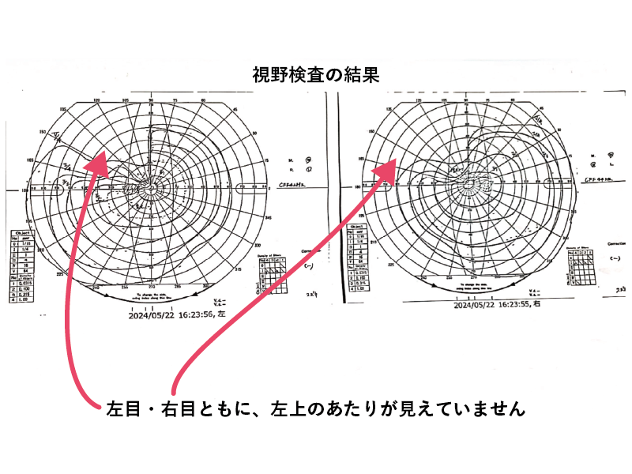
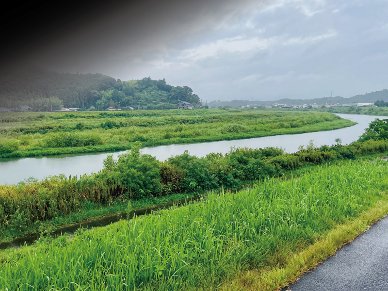

手術から約３ヶ月後、仕事復帰を果たしました。職場の仲間はあたたかく歓迎してくれ、私の仕事の負担軽減への理解も示してくれ、本当に感謝しかありません。ありがたかったです。私は仕事が結構好きだったので、やりたいのにできないもどかしさ、ストレスもありました。
ストレスといえば、視界は結局完全回復とはいかず、左上が欠けて見える程度になりました。日常生活に大きな支障はありませんが、電車内で吊革によくぶつかります。プチストレスです。
また、病気をしてから健康な人と私との間に大きな壁を感じるようにもなりました。友人と会って話をしていても、当たり前に健康な未来を想定した話や夢、仕事での活躍や出世の話、羨ましくて辛くて帰宅後号泣した事もあります。健康なのに怠惰な人や、人生に希望を持っていない人に怒りさえ湧いてきて、そんな捻くれた自分を嫌悪したりもしました。
今は自分を好きになれるように、誰も攻撃しないように、とにかく自分磨きの毎日です。病気があっても負けたくないし、活躍したい。社会に貢献して、堂々と生きていきたい。助けられるばかりではなく、困っている人に手を差し伸べられる優しい私でいたいと思います。
仕事復帰

